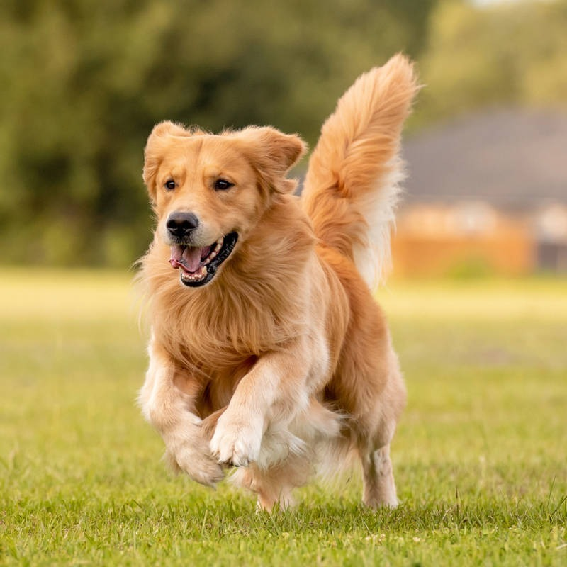

Perro
Definición
Los perros son seres sociables y viven en manada
con otros perros o con humanos. Suelen vivir unos
13 o 15 años y, algunos como los de raza pequeña, llegan
a los 17 años. La calidad de vida, tanto por la alimentación
como por los cuidados de su salud, es un factor de influencia
para la expectativa de vida.
Su gran capacidad auditiva permite que sean guardianes y buenos
cazadores ya que pueden alertarse a tiempo gracias a su capacidad
de captar sonidos muy leves o que provienen de distancias alejadas.
Además, su retina percibe mejor el movimiento y la luz en comparación a las personas,
aunque no distinguen una gran amplitud cromática.
Hábitat
Además de los perros considerados de raza existen, muchos perros
que surgen de las más diversas cruzas, en especial, los callejeros.
Es muy importante adoptar a los perros que no tienen hogar debido a que
son seres sintientes y su vida en la calle está condicionada por la vida en
sociedad de los humanos.
En un entorno natural sin la intervención de la domesticación por parte
del humano, los perros vivirían en un ambiente salvaje. Pero la vida de
ciudad y la domesticación del hombre ha vuelto a los perros seres muy
dependientes del humano para poder vivir de manera saludable.
Es responsabilidad de las personas castrar a las mascotas, incluso a los
que no son de su familia pero que viven en la calle.
Consejos
- Cuidar su alimentación. Estando adaptada a todas las etapas de la vida del perro.
Además de ser conveniente, saludable y nutritiva.
- Garantizar su higiene. Peinarle, cortarle las uñas, limpiarle las legañas,
mantener los dientes limpios, etc. También vigilar la limpieza de sus orejas
y de las patas tras haber dado un largo paseo por zonas boscosas.
- Dedicarle tiempo. Un perro se convierte en uno más de la familia,
y como tal, debemos introducirlo en nuestro hábitos de vida cotidianos.
